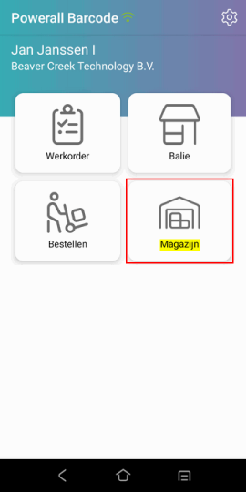
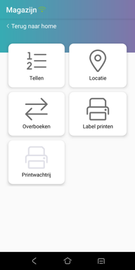
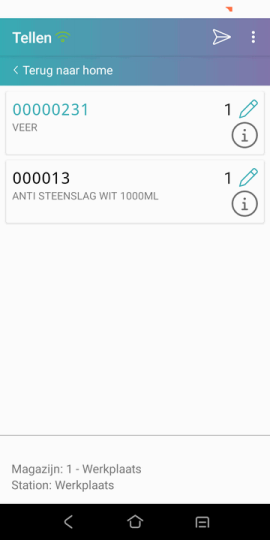
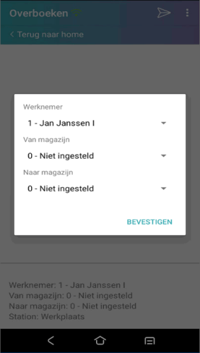
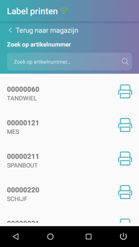
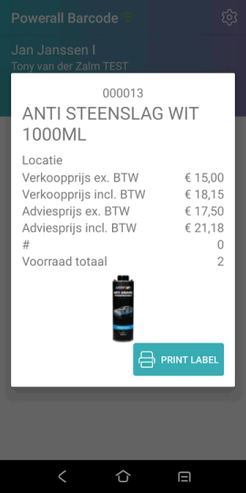
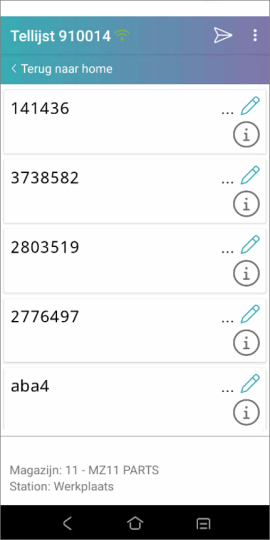

De volgende functies vallen onder magazijn:
Nieuwe krat instelling
Printwachtrij instelling
Kies in het menu Tellen.
Scan de artikelcode ( aantal 1 wordt ingevuld).
Kies eventueel het artikel en wijzig het <aantal>.
Om het volgende artikel in te scannen, herhaal stap 3.
Klaar met scannen?
Druk op 'verzenden'  .
.
De getelde artikelen worden direct overgezonden, vanaf versie 3.14. Uitlezen hoeft hierbij niet open te staan.

De voorraadcorrectie wordt automatisch doorgevoerd.
Belangrijk: Wanneer een artikel op meerdere plekken ligt of meerdere keren gescand wordt, geldt de laatste scanning!
Opmerking: Tellen op de Barcode app versie 3.27 werkt alleen op Powerall versie 3.27 of hoger.
Kies in het menu Overboeken.
Druk onderaan om naar magazijn op te geven.
Vanaf versie 3.23:
Selecteer het van en naar magazijn.
Kies voor de knop BEVESTIGEN.

Scan de artikelcode ( aantal 1 wordt ingevuld).
Kies eventueel het artikel en wijzig het <aantal>.
Om het volgende artikel in te scannen, herhaal stap 3.
Klaar met scannen?
Druk op 'verzenden'  .
.
Hiermee wordt de scanning afgerond en doorgezet naar Powerall, als Uitlezen barcode scanneropen staat.
De artikelen worden overgeboekt (van het Van magazijn X) naar het Naar magazijn Y.
Voorwaarde: Deze module moet geactiveerd worden, zie Instellingen > Modules.
Bij de inrichting of wijziging van een magazijn is het mogelijk om artikelen op bepaalde locaties te scannen en deze daarna bij te werken in Powerall Connect.
Belangrijk: Het locatieartikelcode moet beginnen met een $-teken.
Er kan een tekstartikel aangemaakt worden met een artikelcode $-teken gevolgd door het locatienummer.
Locatienummer: M-01-05-02, toelichting:
| Code | Omschrijving |
|---|---|
| M | aanduiding van welk magazijn (W zou bijv. Winkel kunnen zijn). |
| 01 | aanduiding voor stellingrij. |
| 05 | aanduiding voor stellingnummer in deze rij. |
| 02 | aanduiding voor legplank in deze stelling (van bovenaf gerekend). |
De artikelcode wordt: $M-01-05-02.

Selecteer bij soort artikel tekst.
De werkwijze is als volgt:
Kies in het menu Locatie.
Scan de locatielabel.
Scan de artikelen die op deze locatie liggen.
Sluit af door de volgende acties:
Druk op 'verzenden'  .
.
Hiermee wordt de scanning afgerond en doorgezet naar Powerall, als Uitlezen barcode scanneropen staat.
Vervolgens wordt het bestand uitgelezen en wordt de locatie van gescande artikelen aangepast.
Als er geen magazijn ingegeven is , moet dit in Powerall bij de verwerking.
Opmerking: Voor de barcode van de locatielabels, raadpleeg de helpdesk.
Zoek het artikelnummer op of scan deze.
Druk op Print

Druk op In wachtrij of Print direct.
De af te drukken gegevens / labels zijn te zien in de Print wachtrij.
De print wachtrij wordt grijs weergegevens, als geen afdrukken in de wachtrij staan.
In de artikelregel, wordt bij het i-tje artikelinformatie getoond.

De eerste foto uit het artikel Dossier wordt getoond. Dit geldt voor een .jpg en .png bestand en .jpeg vanaf versie 3.23.
Tellen
M.b.v. Verwerken tellijst (AVT) kan er een teltaak aangemaakt worden.
Deze teltaak wordt overgezonden naar de scanner d.m.v. de knop Lijst naar scanner.
Voor meer info zie Aanmaken/verwerken tellijst.
Rechtsboven in de scanner, kan d.m.v. de optie Tellijst laden, de teltaak ingeladen worden.
 tel daarna de artikelen
tel daarna de artikelen

Gerelateerde onderwerpen
Copyright ©